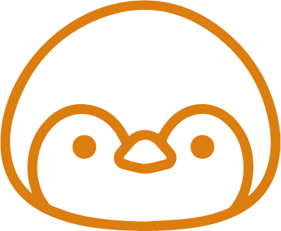

Życie Pingwinów
Pingwiny antarktyczne zasługują na wielkie uznanie, ponieważ obszar który zamieszkują, czyli Arktyka, jest bardzo trudny do przeżycia. Obszar ten znajduje się na półkuli południowej naszego globu i obejmuje samotny, położony najdalej na południe na Ziemi kontynent Antarktydę oraz otaczający ją ze wszystkich stron Ocean Południowy wraz z przyległymi wyspami. Nic dziwnego, że taki to lodowy kraj, skoro temperatura w najzimniejszych okresach spada tu nawet poniżej −90°C. W tak surowym i nieprzyjaznym klimacie mogą wytrzymać tylko bardzo wyjątkowe zwierzęta, a wśród nich szczególnie właśnie pingwiny. Ptaki są tu jednak nieliczne, bowiem lista ich gatunków w Antarktyce składa się w sumie jedynie z 46 gat. Największym w tym gronie i w ogóle wśród wszystkich pingwinów jest pingwin cesarski, u którego wysokość u obu płci wynosi ok. 120-130 cm, przy masie ciała ok. 20-45 kg.
Żywienie
Głównym pożywieniem dla tych zwierząt są ryby, które same sobie wyłowią. Nie pogardzą także skorupiakami, czy głowonogami. Jednym ze sposobów zdobywania pokarmu jest nurkowanie pod lodem. Gdy pingwin wypatrzy swoją ofiarę zaczyna ją ścigać w górę, aż znajdzie się pod lodem, a następnie chwyci swoją ofiarę. Pingwiny są w stanie zostać pod wodą około 18 minut i sześciokrotnie przypuścić atak.
Ciało
Pingwiny kojarzymy raczej z małymi zwierzętami. Ich średni wzrost wynosi około 40 cm. Jednak jeden z przedstawicieli tej rodziny to prawdziwy olbrzym. Pingwin cesarki osiąga wzrost 120 cm przy masie ciała 20 - 45 kilogramów. Zwierzęta te nie posiadają zębów, jednak do łapania swoich ofiar i spożywania pokarmów używają dzioba. Z tego powodu zdarza im się czasem połknąć kamień, który w dalszej fazie ułatwia proces rozdrabniania w żołądku. Według niektórych badaczy tych ptaków, kamienie nie tylko przyspieszają proces trawienia, ale także z uwagi na dodatkowy ciężar pozwalają nurkować na znacznie większą głębokość.